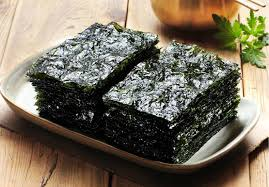
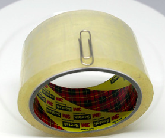
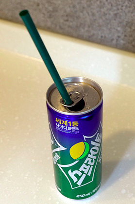
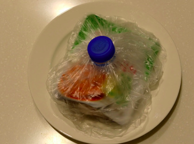

생활 속의 유용한 정보
목차
눅눅해진 김 바삭하게 만들기
박스테이프 편하게 쓰는 방법
캔음료 마실 때 움직이는 빨대 간단하게 고정시키는 방법
생수병 뚜껑을 활용한 음식물 냄새 차단 방법
눅눅해진 김 바삭하게 만들기

눅눅해진 김에 생명력을 불어넣는 가장 간단한 방법은 전자레인지를 이용하는 것입니. 전자레인지는 가정에서 흔히 구비하는 기기이기 때문에 간편하게 활용한 수 있는데. 눅눅해진 김을 전자레인지용 그릇에 넣, 30 초 정도 돌려주면 됩니.다 눅눅해진 김을 전자레인지용 그릇에 담은 후 기기 안에 넣어줍니. 전자레인지 시간을 30초로 세팅하여 돌려주면 간편하게 끝 ! 바삭해진 김을 맛볼 수 있습니다
박스테이프 편하게 쓰는 방법

박스테이프 커터기를 사용하지 않을 경우, 일반적으로는 박스테이프의 시작점을 찾기가 쉽지 않습니다. 또한 찾는다 하더라도 제대로 뜯기가 쉽지 않은데요 그렇기 때문에 클립이나 핀등을 황용해서 박스테 이프 사용 후 끝부분에 클립이나 핀으로 고정해서 보관하면, 다음번에 이용할 때 빠르게 사용할 수 있습니다
캔음료 마실 때 움직이는 빨대 간단하게 고정시키는 방법

빨대를 이용하여 캔음료를 마실 경우 빨대가 고정되지 않아서 먹기가 불편합니다 내용물이 흐르기도 하고 빨대가 캔음료에서 빠져 나오기도 하는데요 간단하게 음료 딴 고리부분을 마시는 쪽으로 돌려주기만 하, 빨대를 고정시킬 수 있습니다
생수병 뚜껑을 활용한 음식물 냄새 차단 방법

김치류의 반찬 등을 휴대하거나 보관할때 완벽하게 냄새를 차단하기 위해서 생수병 뚜껑을 활용할 수 있습니. 생수병을 다 먹은 후 뚜겅부분만 잘라내서 이용할 수 있는데요 비밀봉지에 음식물을 넣은후 자른 생수병 뚜껑으로 막아주면 간단하게 완성할 수 있습니다
돌아가기
만든이 : 2017648052 손민지
오픈소프트웨어
출처 :
https://honeytip.kr/138
https://www.codingfactory.net/10231